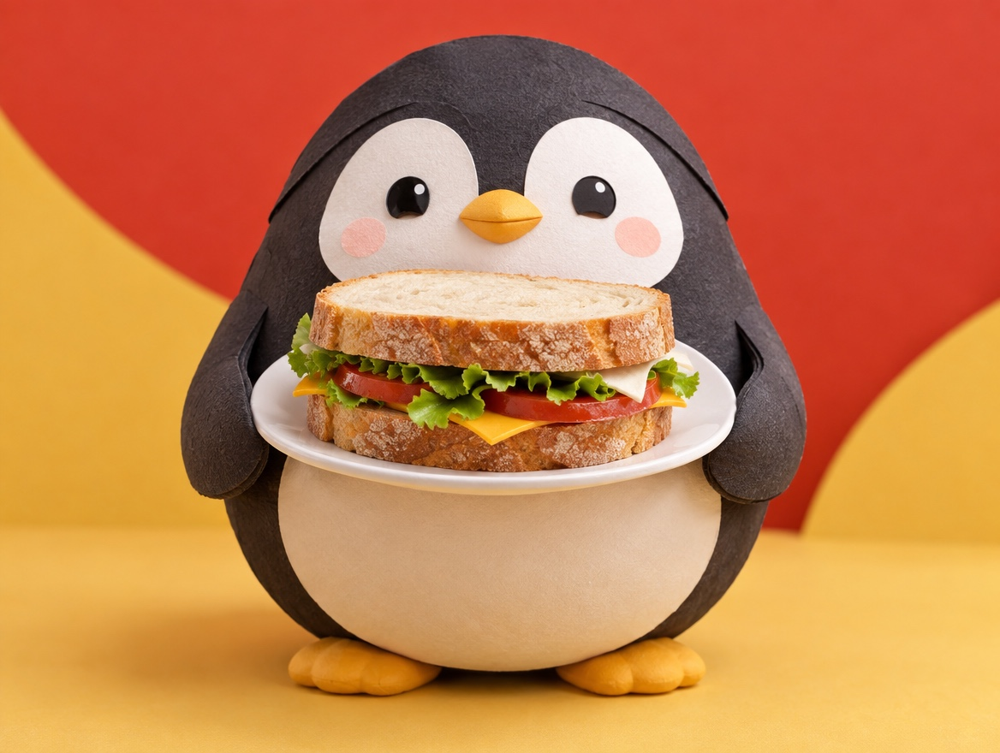

🧪 LAB · 試作 — AIが読書メモから一気に作った記事です。本番の一覧には出していません · 試作の一覧
🐧 EVERYDAY LIFE⚡ 43 SEC
Say hello and goodbye well, and small mistakes in between are forgiven 🥪

Sound Familiar
Do you ever reply a little late or forget to say thanks, and worry about it later?
First And Last
It is said that if your first and last greetings are good, people do not mind small rude things in between.
This is because people remember the first and last impressions very well.
Relationship Passport
A greeting is like a passport that connects people.
Day Sandwich
For example, imagine "Good morning" and "See you" holding your day like a sandwich.
If the bread is strong, it is OK if a little filling comes out.
⚡ TRY IT
Make a day sandwich
Put in bread and oopses, then serve your day.
"Good morning!"
Late reply
Big yawn
Forgot to say thanks
5 minutes late
"See you!"
💛 Forgive meter
Tap the buttons below ⬇️
😋 Yum! The bread holds it all. Small oopses are forgiven!
😬 Half a sandwich… The filling is falling out.
💥 Oopses everywhere! "So rude!"
🤔 There is nothing on the plate.
Try This
Taking care of the first and last 2 times is much easier than trying to act perfectly.
Tomorrow, try to say "Good morning" a little more brightly than usual to the people you meet.
Strong Bread
Your first and last greetings gently wrap your day.
📚 I wrote this from my reading notes.